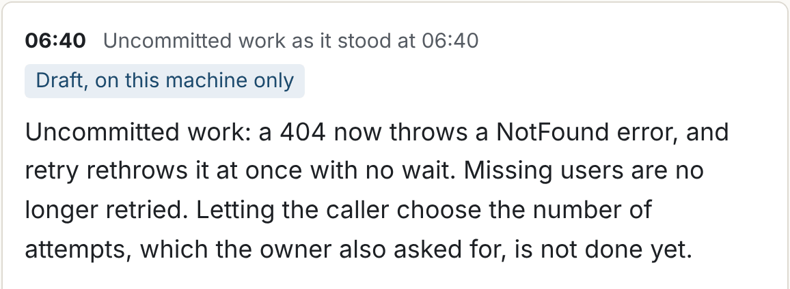

ken
Ask ken what changed in your software project, why, or how a part works now. Each decision, risk and statement in its answer quotes the lines it rests on: code, a commit message, or what was said in a session your coding agent saved.
Why not ask your coding agent? In ken's own test, a plain chat found as many risks or more, and ken lost that count in every round. But ken adds two things. It rejects any answer with a quote it cannot find at the place the quote names, so each quote you see is real. And it keeps the answers, the decisions and the topics you marked as known, so you can find them the next day.
Early work, not released. There is nothing to install and no license yet, and the repository is private, so there is nothing for you to do yet. This page will change when there is.
![The heading 5 risks to watch, then risk 1: The page and the terminal show times differently. The page shows note times and "you last asked" in the browser's local time with no zone. The terminal slices the ISO string and labels it UTC. The two can disagree by hours. Under it are two quotes at commit 53567b4. The first is open and shows line 16 of src/page/live/note.js, which builds the time from getHours and getMinutes. The second is line 71 of src/cli/live.ts, which prints the time with the word UTC.](images/ken-risk-with-quotes-wide.png)
What is in an answer, and what ken checks
An answer has a short summary, then the decisions with their reasons, the risks, and plain statements. Ask how the parts fit together and it opens with one or two basic diagrams, where each box and arrow quotes its lines too.

The check covers only the quotes. It does not check that a sentence, a risk or an arrow is true, and it does not check the summary. The commits, their authors and dates, and the changed lines that no quote covers come from git, not from the model. A label says how the agent knows each claim:
-
Recorded written down at the time, in a commit or with
ken decide. - From the session quoted from a saved Claude Code session, with anything that looks like a secret key removed.
- Inferred worked out from the code or the diff.
- Found by search a link between two pieces of code, not proved.
How ken works
The model provider can be any OpenAI-compatible endpoint. For Claude, ken ships a small local adapter that
turns the claude command into one. It has run on glm-5.3 and kimi-k3.1-pro through Ollama
Cloud, and on Claude Opus through that adapter. gpt-oss:120b, as served on Ollama Cloud in November 2026,
could not follow the quoting rules.
The project record holds what passed the checks: decisions, topics and pieces of work. You commit it for collaborators and their agents, and ken only adds to it, so an entry never changes.
Outside .ken/ in the project and ~/.ken/ on your machine, ken writes nothing. It
never edits your code, commits or pushes. If the check rejects an answer, the agent tries again, and after
three rejected answers ken says it has no checked answer.
What you already know
Press "I know this" under an answer to mark its topics as known. A later answer shortens a topic you know to one line, or leads with the change if the code it quotes has changed. The page also lists the decisions an agent left for you, and the topics you knew that changed since, with who changed them.
Live mode
Live mode runs beside your coding agent. It writes a short note whose quotes ken has checked each time a
commit lands or uncommitted changes stop for a while. A note on uncommitted work is a draft that stays in
ken's store under ~/.ken/. Each note is a model call, so live mode is off until you turn it on,
and the page shows what it spends.

ken has not passed its own test
The plain chat was a coding agent in the same repository, asked the same question. The plan says ken must beat it on at least one of three counts and lose on none: finding a decision or a risk the other missed, trusting the answer because of its quotes, and finding it again the next day.
Three rounds ran ken on glm-5.3, an open-weight model, against a plain chat on Claude Opus. They used merged pull requests of another project by the same owner, three in the first two rounds and five in the third. A fourth round put Claude Opus on both sides, over the same five. A second AI agent scored each round. The owner has not scored them.
In all four, ken won the second and third counts and lost the first. The first verdict opens with "No. ken does not meet its plan's rule." With Claude Opus on both sides, the first count came to three ties and two wins for the plain chat. The two counts ken won, quotes and finding the answer again, are things a plain chat does not have by design.
The verdicts are in the repository, which is private today, under docs/checkpoint/.